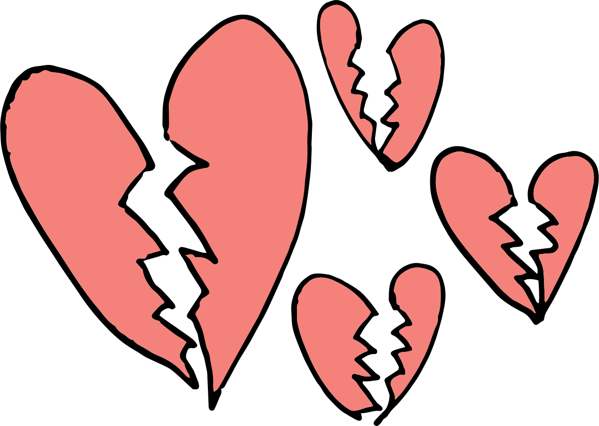
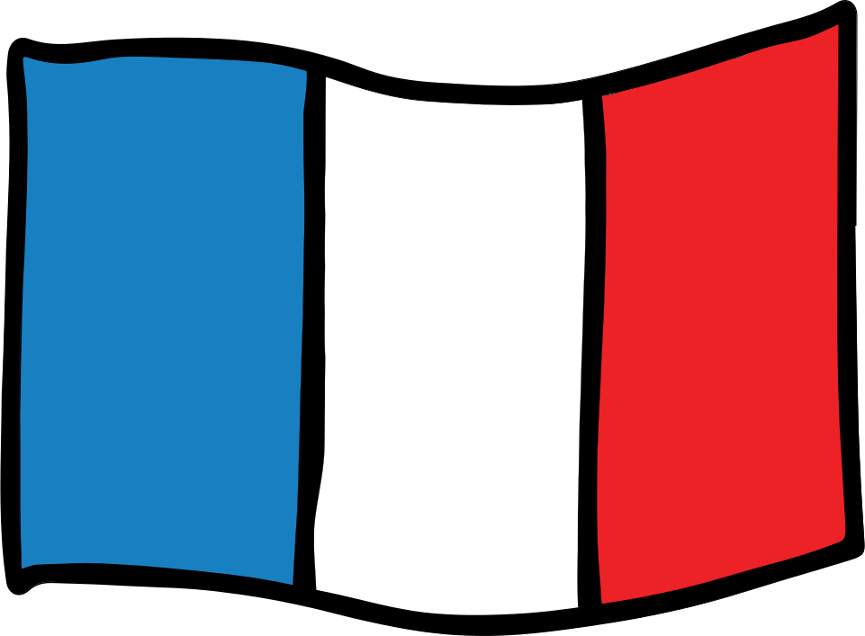

Eurovision songs tell us about love and happiness, scorn and saddness, but how do these countries really feel about each other? Select two nations and find out the nitty gritty (really, just a 20-year average) on their relationship status.
+


Select two countries and peak in at their Eurovision love life.